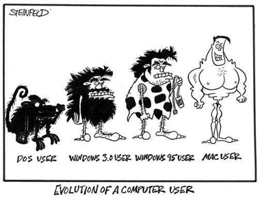

|  Il primo linguaggio di programmazione della storia, se si esclude il linguaggio meccanico adoperato da Ada Lovelace per la programmazione della macchina di Charles Babbage, è a rigor di termini il Plankalkül di Konrad Zuse, sviluppato da lui nella Svizzera neutrale durante la seconda guerra mondiale e pubblicato nel 1946. Plankalkül non venne mai realmente usato per programmare.
La programmazione dei primi elaboratori veniva fatta invece in short code[1], da cui poi si è evoluto l'assembly, che costituisce una rappresentazione simbolica del linguaggio macchina. La sola forma di controllo di flusso è l'istruzione di salto condizionato, che porta a scrivere programmi molto difficili da seguire logicamente per via dei continui salti da un punto all'altro del codice.
La maggior parte dei linguaggi di programmazione successivi cercarono di astrarsi da tale livello basilare, dando la possibilità di rappresentare strutture dati e strutture di controllo più generali e più vicine alla maniera (umana) di rappresentare i termini dei problemi per i quali ci si prefigge di scrivere programmi. Tra i primi linguaggi ad alto livello a raggiungere una certa popolarità ci fu il Fortran, creato nel 1957 da John Backus, da cui derivò successivamente il BASIC (1964): oltre al salto condizionato, reso con l'istruzione IF, questa nuova generazione di linguaggi introduce nuove strutture di controllo di flusso come i cicli WHILE e FOR e le istruzioni CASE e SWITCH: in questo modo diminuisce molto il ricorso alle istruzioni di salto (GOTO), cosa che rende il codice più chiaro ed elegante, e quindi di più facile manutenzione.
Dopo la comparsa del Fortran nacquero una serie di altri linguaggi di programmazione storici, che implementarono una serie di idee e paradigmi innovativi: i più importanti sono l'ALGOL (1960) e il Lisp (1959). Tutti i linguaggi di programmazione oggi esistenti possono essere considerati discendenti da uno o più di questi primi linguaggi, di cui mutuano molti concetti di base; l'ultimo grande progenitore dei linguaggi moderni fu il Simula (1967), che introdusse per primo il concetto (allora appena abbozzato) di oggetto software.
Nel 1970 Niklaus Wirth pubblica il Pascal, il primo linguaggio strutturato, a scopo didattico; nel 1972 dal BCPL nascono prima il B (rapidamente dimenticato) e poi il C, che invece fu fin dall'inizio un grande successo. Nello stesso anno compare anche il Prolog, finora il principale esempio di linguaggio logico, che pur non essendo di norma utilizzato per lo sviluppo industriale del software (a causa della sua inefficienza) rappresenta una possibilità teorica estremamente affascinante.
Con i primi mini e microcomputer e le ricerche a Palo Alto, nel 1983 vede la luce Smalltalk, il primo linguaggio realmente e completamente ad oggetti, che si ispira al Simula e al Lisp: oltre a essere in uso tutt'oggi in determinati settori, Smalltalk viene ricordato per l'influenza enorme che ha esercitato sulla storia dei linguaggi di programmazione, introducendo il paradigma object-oriented nella sua prima incarnazione matura. Esempi di linguaggi object-oriented odierni sono Eiffel (1986), C++ (che esce nello stesso anno di Eiffel) e successivamente Java, classe 1995.
|